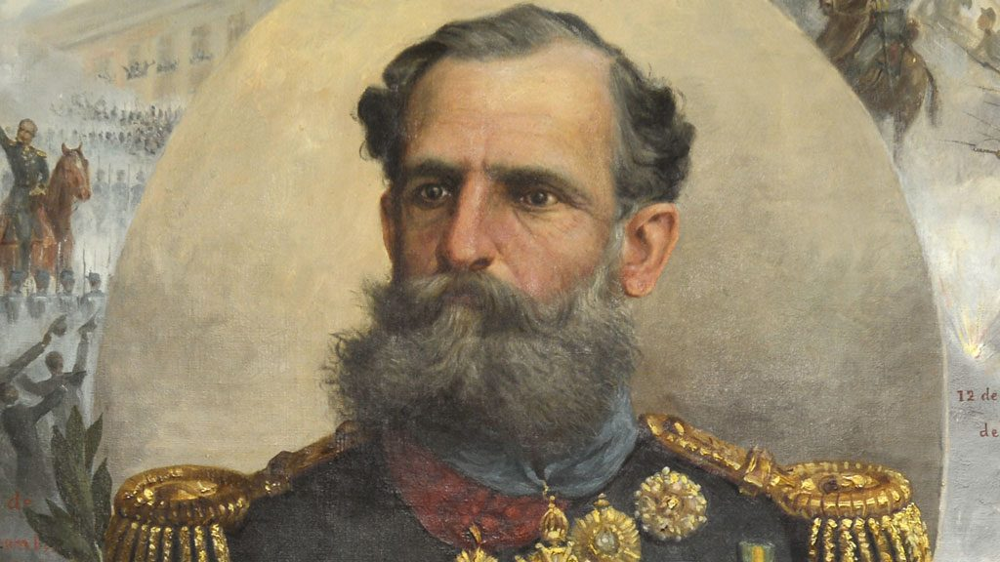

Personagens Marcantes
Biografias de figuras importantes na transição do Império para a República.

Marechal Deodoro da Fonseca
Líder militar do golpe que proclamou a República, tornando-se o primeiro presidente do Brasil.
Saiba MaisBenjamin Constant
Militar e professor, foi um dos principais articuladores do movimento republicano e influenciador das ideias positivistas.
Saiba MaisFloriano Peixoto
Militar e segundo presidente do Brasil, conhecido como "Marechal de Ferro" por sua atuação na consolidação da República.
Saiba MaisQuintino Bocaiúva
Jornalista e político, foi uma figura civil de destaque no movimento republicano e membro do governo provisório.
Saiba Mais